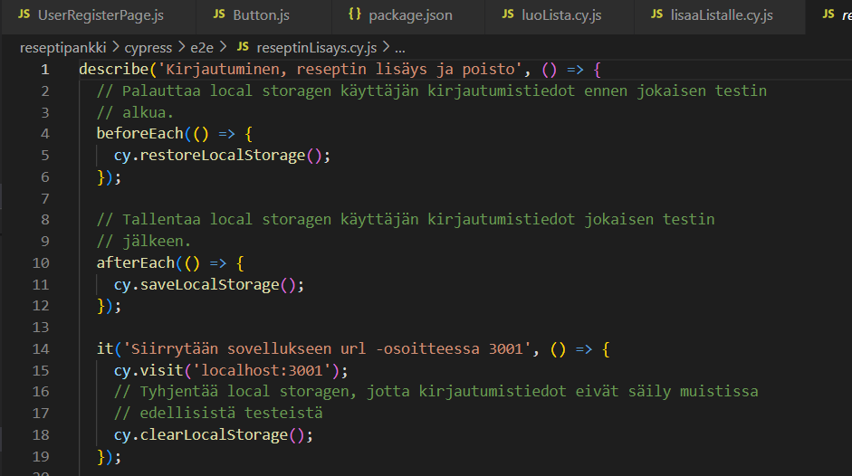

Portfolio
Testaus
Testauksen työnäytteet ovat toteutettu kaikki Ticorporaten aikana. Projektissa sai harjoitella uusien tekniikoiden käyttöä. Cypressia olin käyttänyt aiemmin, sekä kirjoittanut yksikkötestejä Mocha & Chai:lla.
 Cypress testi, jossa funktiot palauttavat ja tallentavat kirjautumistiedot jokaisessa testissä. Reseptin lisäys End to End -testi Cypressillä
Reseptin lisäys End to End -testi Cypressillä
 Yksikkötesti Jestillä, jossa testataan Loading komponentin renderöimää
tekstiä
Yksikkötesti Jestillä, jossa testataan Loading komponentin renderöimää
tekstiä